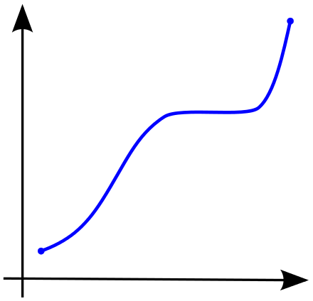

순방향, 역방향
같은 방향으로, 반대 방향으로
등을 의미할 때 주로 쓰입니다.
무언가 기준이 있고, 그 것의 움직임, 변화에 따라 다른 것이 어떻게 되냐에 따라 붙는 용어입니다.
Variant
어원은 “tending to change”인데, 변하려는 성향정도 번역할 수 있을까요? 자료들을 보면 “변성”이라고 번역하기도 합니다. 위 접두어와 합치면, 같은 방향으로 변하면 공변covariant, 반대 방향으로 변하면 반변contravariant입니다. 반변은 반공변으로 번역하기도 합니다.
기저 벡터
웹에서 Covariant, Contravariant를 검색하면, 수학쪽 용어도 같이 검색됩니다. 예를 들어 기저 벡터를 phi만큼 회전하면, 좌표 변환은 -phi만큼 돌린 것과 같습니다. 이럴 때 Contravariant라 합니다.
OOP에서
※ P : Parent 의미, C : Child 의미
아래와 같은 상황을 가정하면
P는 a, b, c 메소드를 가지고 있고, C는 P가 할 수 있는 a, b, c는 모두 그대로 가지고 있고, d, f 메소드도 있다.
이럴 때 P가 필요한 자리에, C를 넣을 수 있습니다. P타입을 받는다는 건, a, b, c 메소드를 쓰겠다는 건데, C타입도 이들 메소드를 모두 가지고 있으니 문제가 생기지 않습니다.
P(super) <- C(sub) 관계가 있을 때, P와 C에 의존하는 어떤 Generic 클래스, 타입 등이
SomeVariant P <- SomeVariant C
와 같이 변성(변환) 전의 것과 같은 방향의 관계가 있을 때 Covariant, 반대일 때 Contravariant라 합니다.
하스켈에서는 무엇이 변할까?
다른 곳에서도 이 용어는 많이 쓰입니다. 여기서는 하스켈에서 타입 얘기를 할 때 나오는 뜻만 보겠습니다. 적어도 두 가지가 변화하는 게 있어야, 이 용어를 쓸텐데, 무엇이 변화할 때 무엇이 co, contra란 말 없이 그냥 covariant와 contravariant로 설명하는 경우가 있어, 금방 이해가 가지 않을 때가 있습니다.
하스켈에선 Functor로 타입이 변환 되었을 때, 기존 관계(함수)가 어떻게 되느냐에 관한 용어입니다.
P, C 타입이 있고, f :: P -> C 란 함수가 있을 때 SomeFunctor로 변환한다면,
SomeFunctor P, SomeFunctor C 로 변환하고,
f 변환 :: SomeFunctor P -> SomeFunctor C 이면 Covariant 이고,
f 변환 :: SomeFunctor P <- SomeFunctor C 이면 Contravariant 라 합니다.
fmap :: (a -> b) ->Maybe a ->Maybe b
a -> b 인데, Maybe로 변환하면 Maybe a -> Maybe b로 만들기 때문에 Covariant functor라고 부릅니다.
Int -> String 함수를 covariant functor로 변환해서 Maybe Int 에 적용할 수 있습니다.
하지만, Double -> Int 같은 함수는 covariant functor로 적용할 수 없습니다.
만일, a -> b가 Some b -> Some a로 변환되면 Some은 a에 Contravariant라 말하는데, 다음 섹션에서 예시를 보겠습니다.
newtypeMakeString a =MakeString { makeString :: a ->String }showInt ::MakeStringIntshowInt=MakeStringshow-- (a -> b)가 아니라 (b -> a)입니다.mapMakeString :: (b -> a) ->MakeString a ->MakeString bmapMakeString f (MakeString g) =MakeString (g . f)plus3ShowInt ::MakeStringIntplus3ShowInt = mapMakeString (+3) showIntmain ::IO ()main =putStrLn$ makeString plus3ShowInt 5
소스를 잘 읽어보면 (b -> a)로 뒤집혀 있기 때문에 그냥 covariant functor로 구현할 수 없습니다.
classContravariant f where contramap :: (a -> b) -> f b -> f a
이런 경우를 위해 fmap 대신 contrafmap을 가진 Contravariant 클래스가 있습니다.
결과 타입은 고정되어 있는데, 입력 타입이 달라질 필요가 있을 때 쓸 수 있습니다. (fmap은 covariant한 경우에 쓴다고 말하는데, 잘 생각해 보면, fmap은 입력 타입이 고정이고, 결과 타입이 달라질 필요가 있을 때 써왔습니다.)
입력 위치에 있으면 Contravariant
출력에 있으면 Covariant
입력에 있으면 Contravariant
위와 같은 상황에서도 같은 용어를 쓰는데, 무엇이 기준이고 무엇이 따라 변하는 건지 모호합니다. 이전 섹션의 Contravariant를 보면, a에서 Some a로 변환할 때, Some 정의안에 a의 위치가 SomeType -> a이면, 특별히 “a와”란 말을 쓰지 않고도, 그냥 Covariant란 말을 쓰고, a -> SomeType이면 a와 Contravariant라고 말합니다. functor의 성질이 a의 위치에 따라 Co, Contra로 바뀌니 그냥 이렇게 부르기도 하는 것 같습니다.
Consume하면 Contravariant
Produce하면 Covariant
Consume하면 Contravariant
SomeType -> a이면 결과로 a를 만들어내니 Produce한다고 말하고, a -> SomeType은 a를 인자로 받아 써먹으니 Consume이라 말합니다.
Consume하면 Negative, Produce하면 Positive
위에서 말한 Consume 모양 중 V -> Int 함수를 받는 고차 함수를 살펴 보겠습니다.
func1 :: f ::V->Intfunc2 :: ( f ::V->Int ) ->Intfunc3 :: ( g :: ( f ::V->Int ) ->Int ) ->Intfunc4 :: ( h :: ( g :: ( f ::V->Int ) ->Int ) ->Int ) ->Int
실행되는 코드는 아니고, 고차 함수들이 함수를 인자로 받는 부분에 f,g,h 이름을 붙여 놨습니다.
func1은 외부에서 V값을 받을테고, - 외부에서 들어온 값을 Consume합니다.
func2는 내부에 f에 넣을 정해진 V값이 이미 있고, - 내부에서 Produce합니다.
func3는 f모양의 “함수” 인자를 가지고 있고, V값은 g의 자리로 들어오는 함수가 가지고 있습니다. 즉 외부에서 값이 들어 옵니다. - Consume
func4는 g모양의 “함수” 인자를 가지고 있습니다. 이 함수 안에는 이미 정해진 V값이 들어 있습니다. - Produce
잘 보면, V가 contravariant 위치에 있는 함수를 받는 고차 함수를, 차수를 올릴 때마다 Consume, Produce가 반복되고 있습니다.
V가 Contravariant 위치에 있는 func1은 Consume이지만,
f :: V -> Int 자체가 Contravariant위치에 있으면 Produce하게 됩니다.
한 번 더 g :: ( V -> Int ) -> Int 자체를 Contravariant에 두면, 다시 Consume으로 바뀝니다.
한 번 더 h :: (( V -> Int ) -> Int ) -> Int) 자체를 Contravariant 두면, 또 다시 Produce로 바뀝니다.
마치 마이너스(-), 즉 Negative 기호 연산(음수 x 음수 = 양수)을 반복하는 것 같은 모양이 나옵니다. Contravariant인 것을 Contravariant에 두면 Covariant로 바뀌고 있습니다. 이런 성질 때문에 Negative, Positive로 표현합니다.
@재원님이(a -> b) -> b 형태의 함수는 안에 a를 가지고 있다는 설명 방식에 헛점이 있다고 지적해 주셨습니다. 왜냐하면 꼭 a를 가지고 있지 않고, 함수 자체를 버려도 성립은 하니 “반드시” a를 가지고 있을 거라 설명하면 안된다는 말씀입니다. 물론, 맞는 말씀인데, 여기선 직관을 위해 “대부분” 그럴거란 가정하에 그대로 두었습니다.
@다믜님이 설명하신 내용인데, 다믜님 허락하에 원문을 올립니다.
a -> b 를 구현할 때에는 a가 주어지니 이걸 사용하기만 하면 되죠. negative입니다. (a -> b) -> c 의 경우 a -> b가 주어지는데, 이걸 사용하는 유일한 방법은 a -> b에 인자로 a를 주는것입니다. 결국 a를 만들어줘야 하죠. positive입니다. ((a -> b) -> c) -> d 에서는 (a -> b) -> c 가 주어지고 이걸 사용하려면 a -> b 를 건네줘야 하죠. 그리고 a -> b 를 만들 때에는 주어진 a를 사용하면 되니 결국 a를 받는 꼴이 됩니다. negative가 되지요
negative/positive를 이해하는 다른 좋은 방법으로 monotonic function이 있는데요
increasing function은 postivive, decreasing function은 negative에 대응이 됩니다.
increasing function은 a ≤ b → f(a) ≤ f(b) 를 만족하는 함수 f, decreasing function은 b ≤ a → f(a) ≤ f(b) 를 만족하는 함수 f를 말하는데, 이것만 보더라도 이미 co/contra-variant functor와의 유사성이 보이죠
그리고 increasing/decreasing function을 합성할 때 decreasing function이 짝수 번 나오면 increasing, 홀수 번 나오면 decreasing이 된다는걸 쉽게 할 수 있습니다
가령 f, g 가 decreasing function이라고 할 때 f∘g 가 어떻게 되는지 보면
1. a ≤ b 이면 g(b) ≤ g(a) (g가 decreasing 이므로)
2. g(b) ≤ g(a) 이면 f(g(a)) ≤ f(g(b)) (f가 decreasing 이므로)
3. 1,2 를 합하면 a ≤ b 일 때 f(g(a)) ≤ f(g(b)). 즉 f∘g 는 increasing. 이렇게 됩니다.
이걸 굳이 monotonic function으로 설명한 이유는 이제 그래프로 볼 수가 있어서 그렇습니다.
increasingdecreasing
각각 increasing/decreasing function의 그래프구요
decreasing function 두개를 합성하면 increasing이 된다는건 아무 점이나 두개찍고 대소관계를 비교해보면 쉽게 느낄 수 있습니다
negative/positive란 용어는 논리학에서 왔구요, 함수를 대상으로 하는 경우에는 monotonic, increasing/decreasing이라는 표현을 주로 사용하죠. 카테고리에서 이제 covariant/contravariant라는 표현을 쓰구요